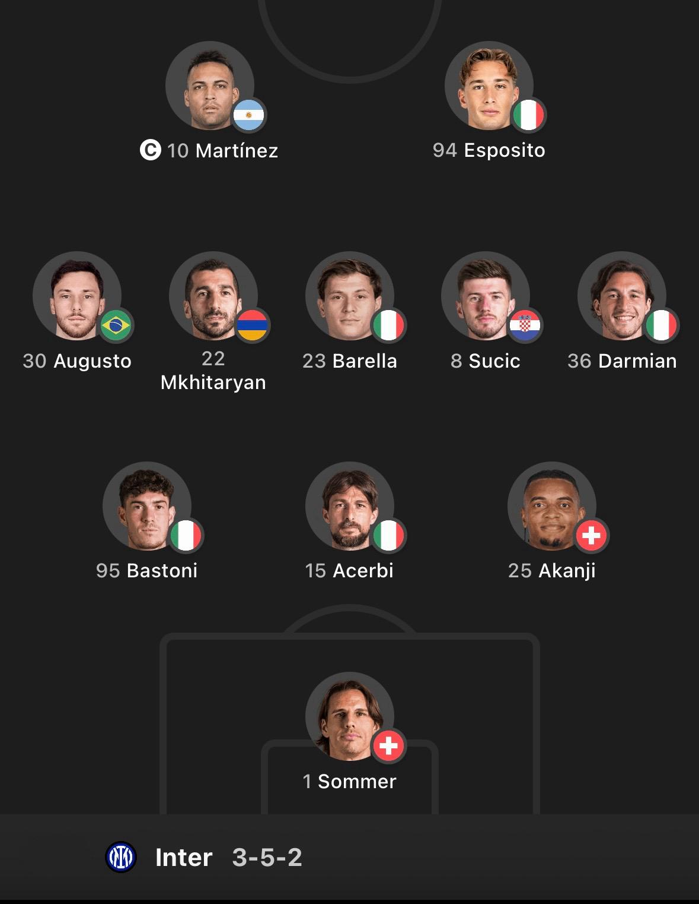
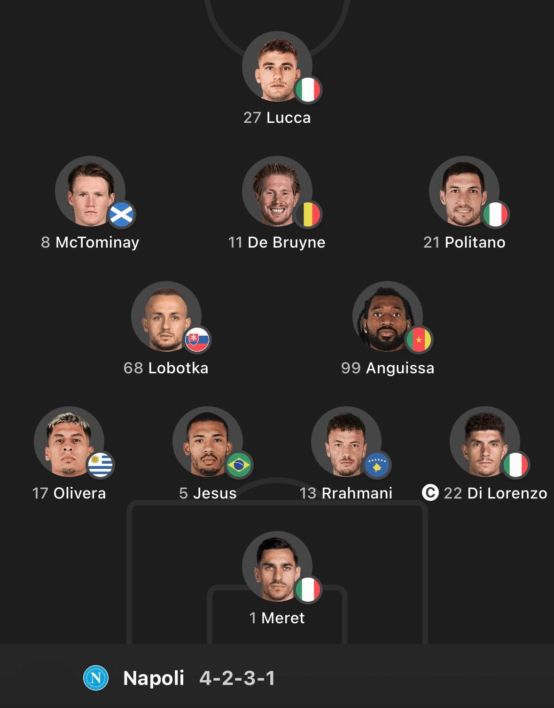
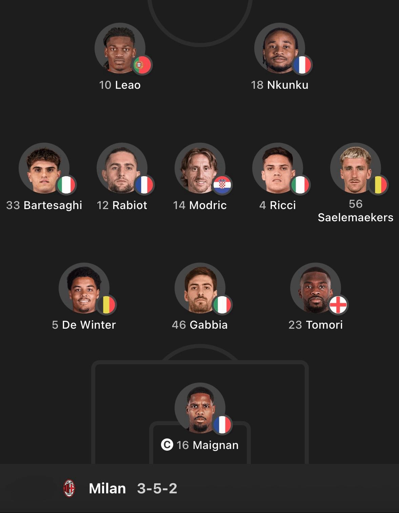
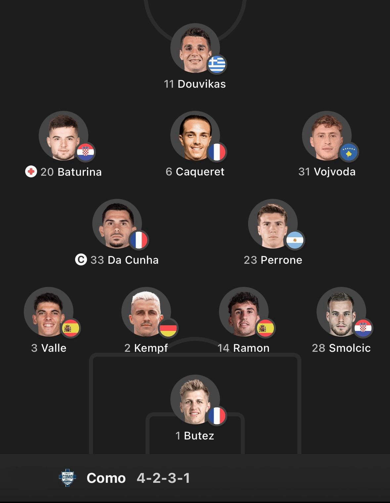
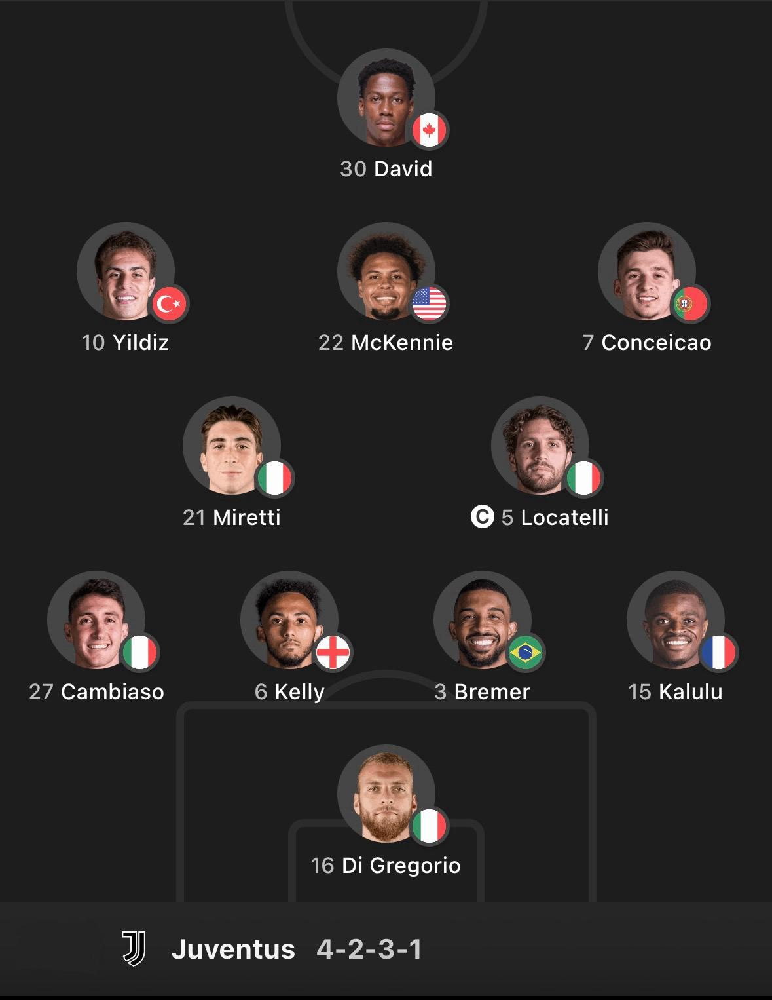
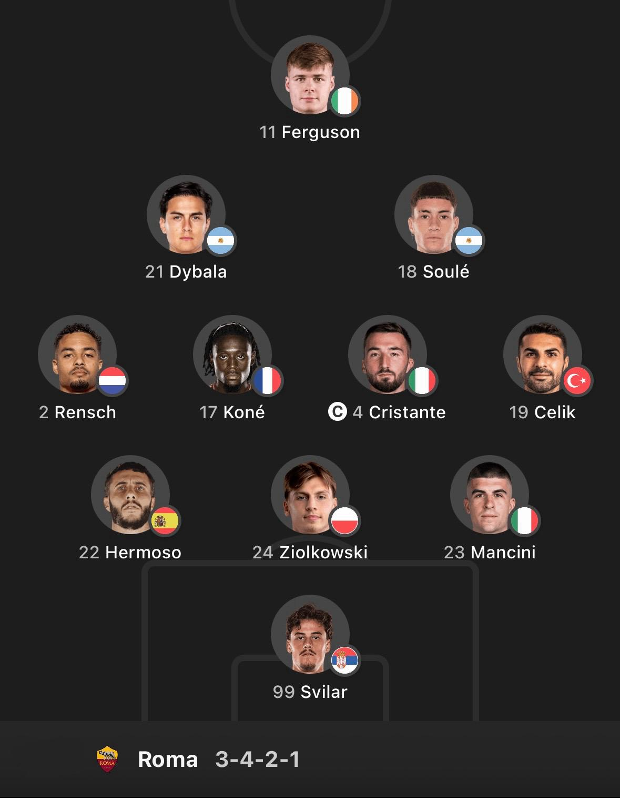

Inter - 68 punti
Storia
Stadio

Fondato il 9 marzo 1908 da un gruppo di soci dissidenti del Milan,
il club ha sempre militato nella massima serie del campionato nazionale a partire dalla propria prima partita ufficiale,nel 1909


Napoli - 62 punti
La fondazione del club avvenne di fatto il 25 agosto 1926
in seguito al cambio di denominazione del Foot-Ball Club Internazionale-Naples, società costituitasi nel 1922, in Associazione Calcio Napoli.



Milan - 60 punti
Fondato nel 1899 da un gruppo di inglesi e italiani,è uno dei club più antichi d'Italia,
nonché uno dei più blasonati al mondo e con maggior tradizione sportiva. Indossa una divisa a strisce verticali di colore rosso e nero,
da cui il soprannome di "rossoneri".



Como - 54 punti
La tradizione sportiva del principale sodalizio calcistico comense,
la 26ª a livello nazionale secondo i criteri della FIGC,
iniziò nel 1907 con la nascita del Como Foot-Ball Club.



Juventus - 53 punti
Fondata nel 1897 da un gruppo di studenti liceali locali,"la Juve",
com'è colloquialmente abbreviata,
è il secondo club professionistico per anzianità tra quelli tuttora attivi nel Paese, dopo il Genoa (1893).



Roma - 51 punti
Fondata nel 1927 grazie alla fusione di tre squadre, ha come colori sociali il rosso e il giallo,
tonalità cromatiche corrispondenti al gonfalone del Campidoglio. A livello nazionale i Giallorossi, uno dei soprannomi che contraddistinguono la Roma insieme a Lupa e Magica.

